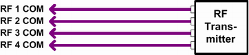

During "Switched MIMO Measurements", the transmitting antennas are simultaneously connected to different RF input ports.
Switched MIMO measurements require two basic frontends. Such a configuration is for example possible for an R&S CMW500.
The assignment between the TX antennas and the RF ports is fixed. MIMO 4xN signals are supported. Connect TX antenna 1 to RF 1 COM , TX antenna 2 to RF 2 COM, and so on.

MIMO 2x2, 4x4 and 8x8 are supported. The connector assignment is configurable as follows.
For MIMO nxn, the available eight connectors are divided into 8/n tuples with n connectors each. For MIMO 4x4 for example, you get the two tuples 1.1 to 1.4 and 1.5 to 1.8.
You can select the tuple to be used. Within the tuple, you can freely assign the DUT antennas to the connectors.